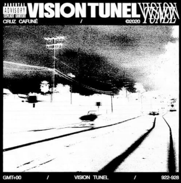
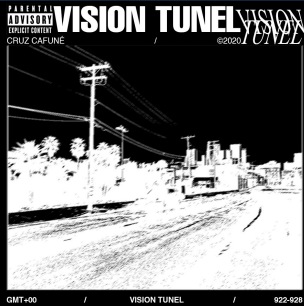
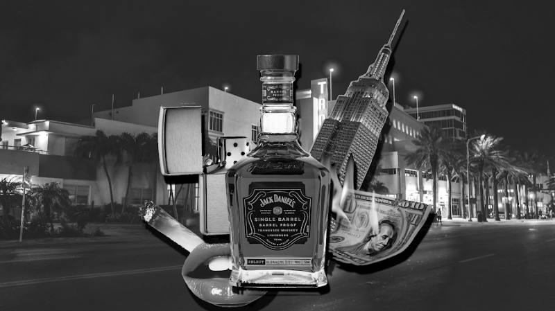
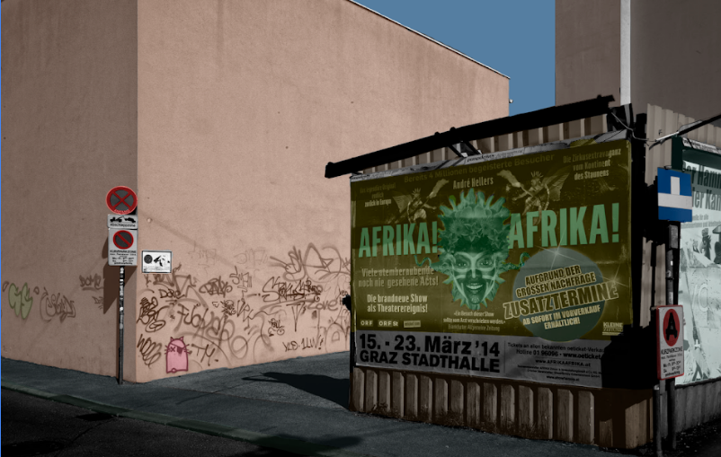
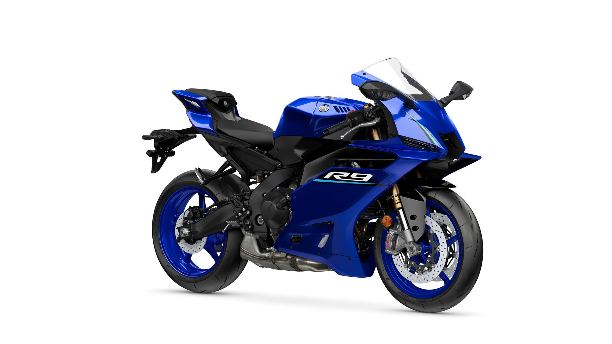
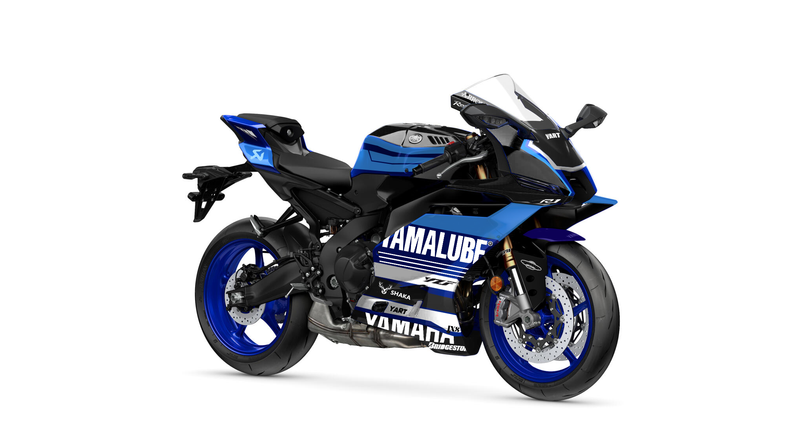
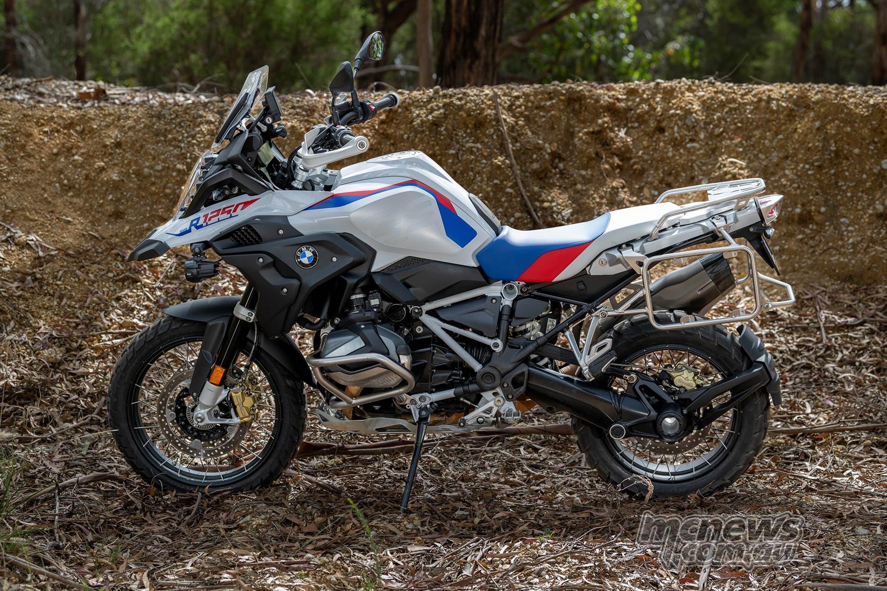
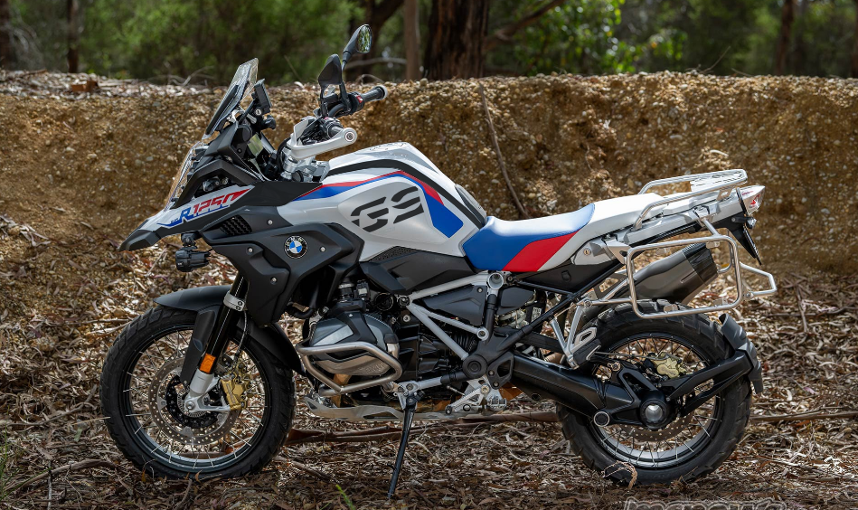
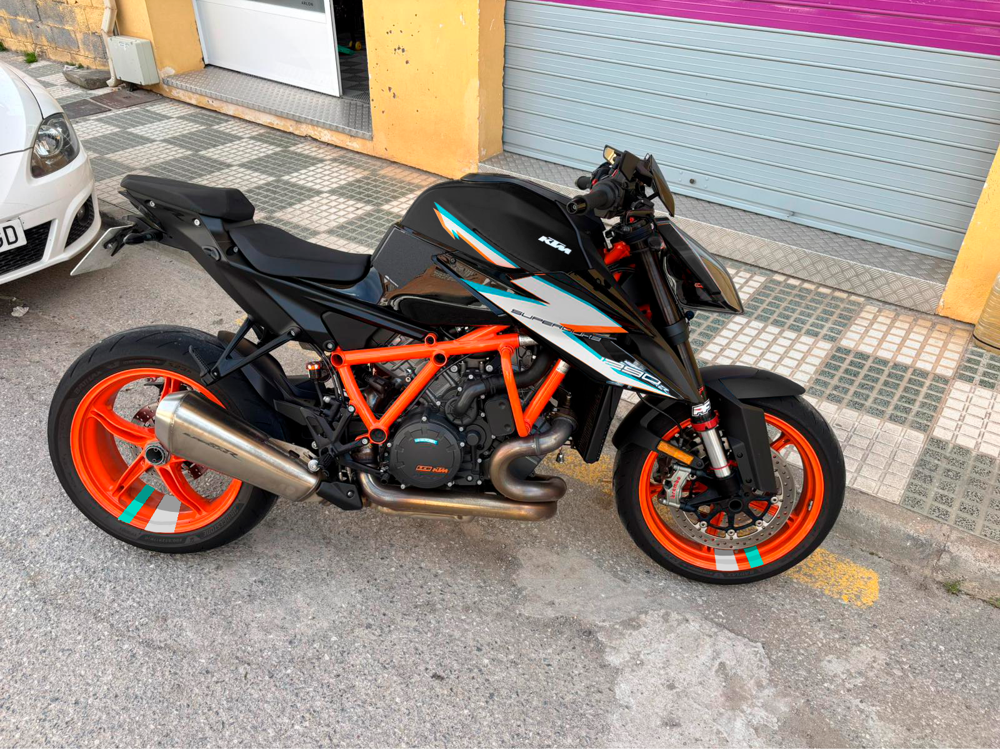

Photoshop
Trabajos de tipografía, collage, coloreado de fotografía y mockups de vinilos para motos, hechos con Adobe Photoshop.
Trabajo de clase
Trabajo con tipografías
Recreación de una portada de un disco musical




Trabajo de prácticas
Mockups de vinilos decorativos sobre motos.
Mockup Yamaha R9


Con vinilos De serieVariaciones de pegatinas Kawasaki Ninja
Mockup BMW GS


Con vinilos De serieMockup KTM Superduke
